Early Letters: the final mark
Two finals from one drawing system. Y's typographic quotation mark, redrawn with curvature-continuous joins and softened wedge corners, given X's presence in the tile, a closer and leaning child, a dedicated small cut, the dithered Leather T tile and the W4 wordmark. final-a is the pair. final-b adds a restrained version of round 2's gesture: the parent's tail bends over the child.
Large, on paper and at night
final-a: the pair
| Mark in tile | 57.66% x 56% (Y: 49% x 49%), ink 16.99% |
| Mass centre | 508, 534 at 1024 (Y: 487, 569) |
| Gap between marks | 35.44 px at 1024 (1 px at 29); small cut 68.24 (1.93 px at 29) |
| Child | exactly the parent's base drawing x 0.62, leaning 14 deg toward it, lifted 0.08 bowl radii |
| On-curve nodes | parent 12, child 12; every join G2 (solved, see proofs) |
final-b: the pair, sheltered
| Mark in tile | 53.74% x 56% (Y: 49% x 49%), ink 16.49% |
| Mass centre | 508, 534 at 1024 (Y: 487, 569) |
| Gap between marks | 34.46 px at 1024 (0.98 px at 29); small cut 75.15 (2.13 px at 29) |
| Child | exactly the parent's base drawing x 0.62, leaning 14 deg toward it, lifted 0.12 bowl radii |
| On-curve nodes | parent 17, child 12; every join G2 (solved, see proofs) |
Sizes (shipped PNGs, 1 CSS px = 1 image px)
final-a
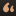
final-b
Home screen: light, dark, tinted (icon bench, 3x)
final-a
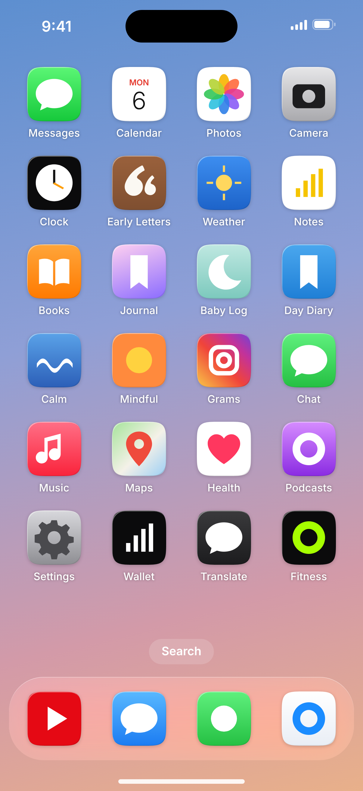
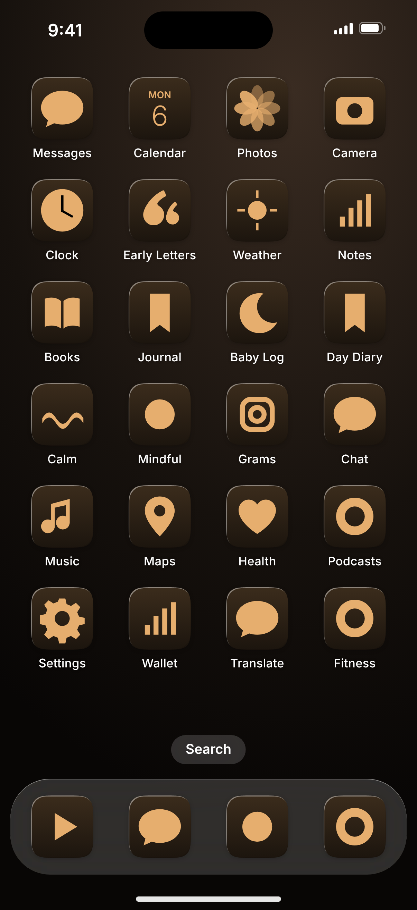
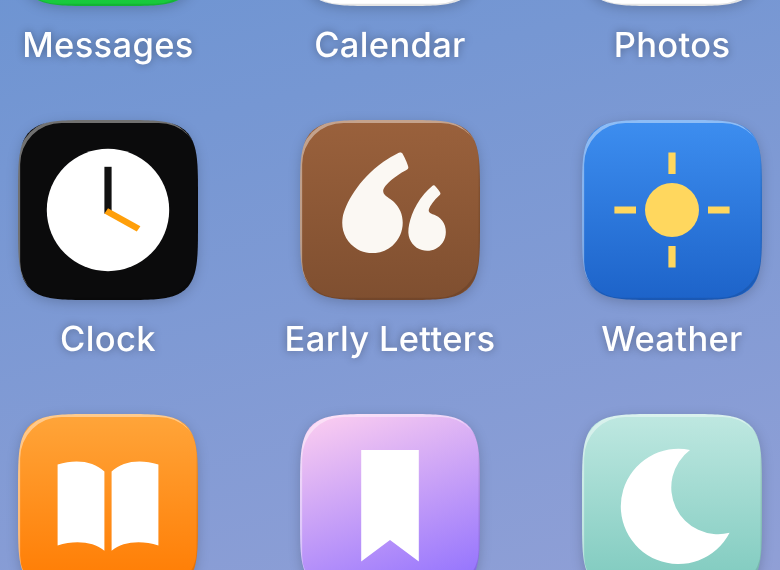
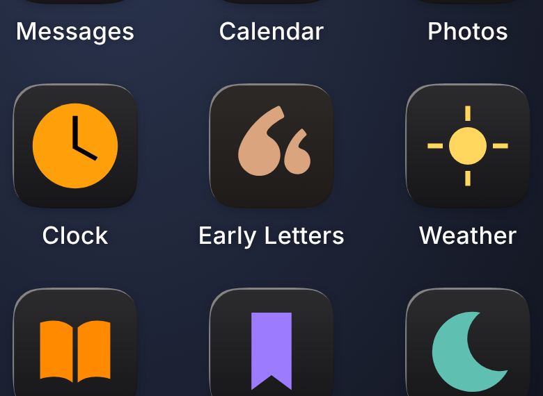
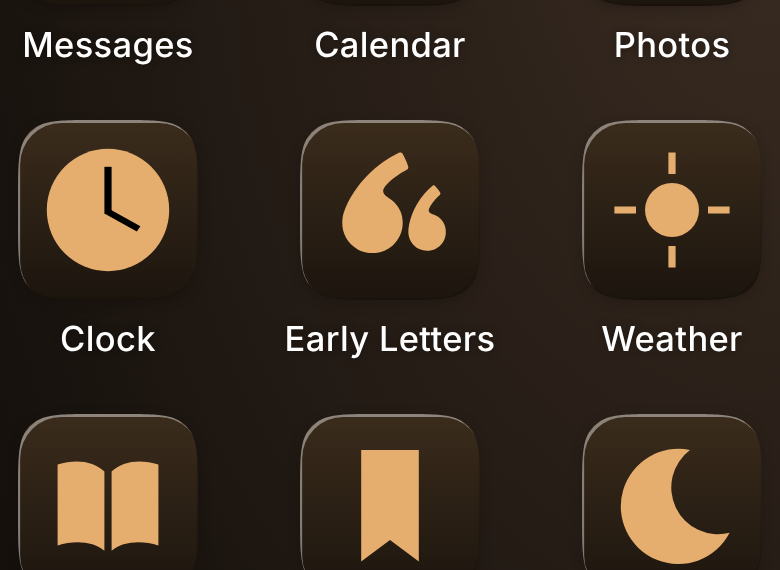
final-b
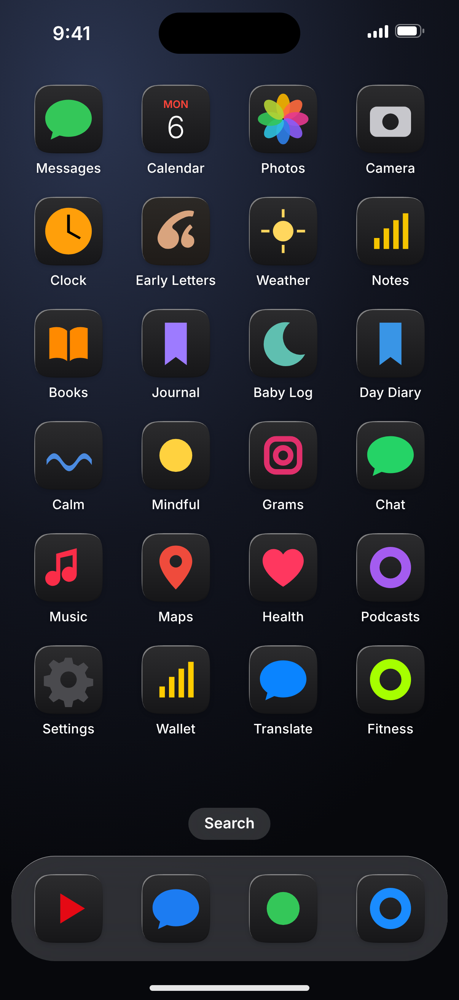
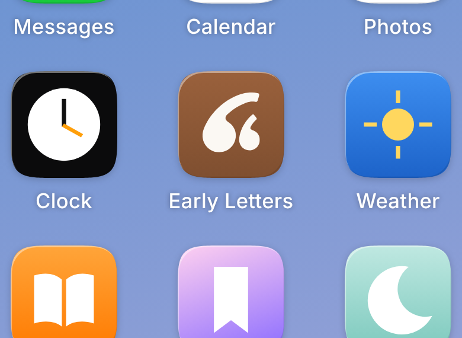
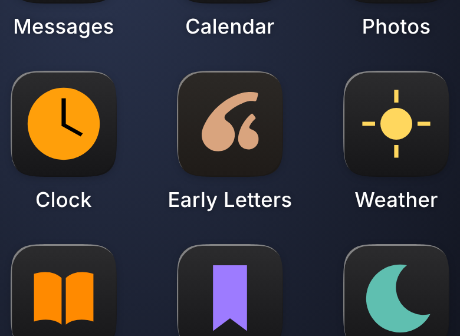
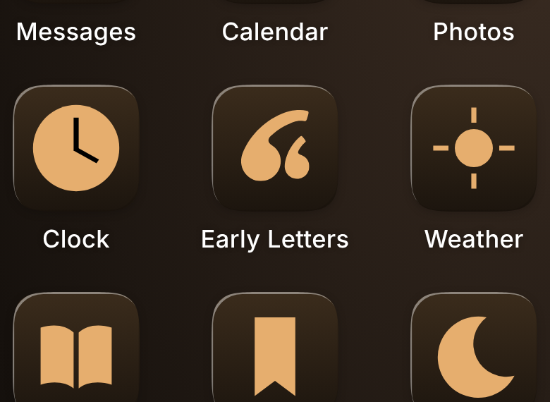
Lockups (W4, EB Garamond, revised spacing)
Email header (28 px lockup, small cuts)
A new letter for Asha is in the book.
Recorded today, kept exactly as you said it.
A new letter for Asha is in the book.
A new letter for Asha is in the book.
Recorded today, kept exactly as you said it.
A new letter for Asha is in the book.
Book cover, blind deboss
Blind deboss, mark 25 mm wide. Notch bottom (fillet diameter) 2.92 mm on the parent, 1.81 mm on the child; gap between marks 1.35 mm. All above the 0.5 mm minimum the production critic set.
Blind deboss, mark 25 mm wide. Notch bottom (fillet diameter) 2.91 mm on the parent, 1.80 mm on the child; gap between marks 1.45 mm. All above the 0.5 mm minimum the production critic set.
Drawing proofs: nodes, handles and curvature combs
The blue comb is curvature. A smooth comb means a smooth contour; a jump means a visible join. Y's comb jumps where the tail meets the bowl (outer flat run) and spikes at the inner button. The finals ramp everywhere; the only peaks are the two deliberately rounded cut corners.
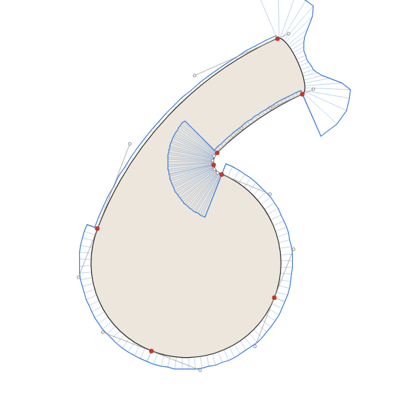
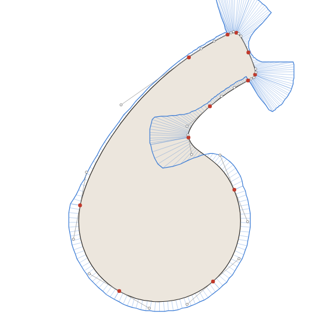
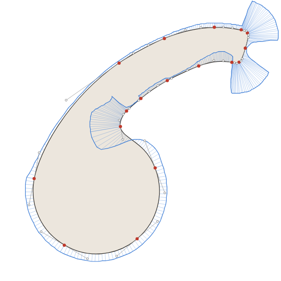
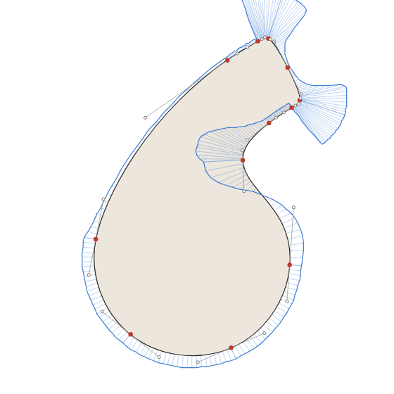
Where it came from
Gradient banding, contrast stretched 40x
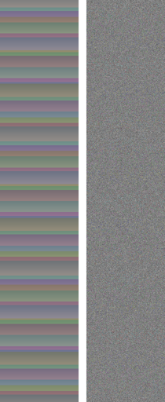
Left: plain 8-bit gradient (bands about 38 px tall). Right: the shipped dithered tile. At normal contrast both look smooth; on some panels and after compression only the right one stays smooth.
"66" test: rotate the pair 4 degrees?
Every must-fix from the final critiques
| Critic | Must-fix | Done / how |
|---|---|---|
| Cold read | Widen the gap between the marks to about 32 to 40/1024 | Done. 35.44 px (a), 34.46 px (b) at 1024, measured outline to outline. The small cut opens it to 68.24 / 75.15. |
| Cold read, identity | Smooth the inner-join nub ("button") where the tail meets the bowl | Done. The inner tail edge, the notch and the bowl are three anchors joined by curvature-solved cubics. No convex bump remains; see the combs in the proof row. |
| Cold read, parents, identity | Thicken the tail tips in the small cut 15 to 20% (identity: +20%, shorten 10%) | Done. Small cut tail width 0.76 vs 0.62 (+23%), sweep 3 degrees shorter (about 9% of the tail), notch radius 0.30 vs 0.20. |
| Cold read, culture, identity | Scale the mark up (6 to 8%, 8 to 10%, 15%) | Done. Box height 49% to 56% (+14%); width 57.66%. Ink 12.7% to 16.99%. |
| Cold read, strategy | Keep the 0.62 ratio visible; never drift to equal sizes; make it a rule | Done. Master 0.62, small cut 0.64. Rule: the child is never above 0.66 and never below 0.58. |
| Cold read, parents | Tenderness: move the child closer, lean it toward the parent; kill the "66" read | Done. Child leans 14 degrees in (Y: 8), is lifted off the shared baseline so it tucks under the parent's tail, and sits 35 px away. Stranger test below. |
| Culture | Open the small mark's notch; >= 0.5 mm at 25 mm emboss | Done. See the emboss: notch and gap sizes are printed under it. |
| Culture, strategy | Ship hand-tuned 16, 29, 40 px assets (asset catalog, All Sizes) | Done. png/icon-16/29/40 come from symbol-small, pixel-fitted (best of 27 sub-pixel offset and +-2% scale trials, chosen for edge crispness). Engineering must ship an asset catalog with All Sizes, not one Icon Composer master, or these never reach a device. |
| Culture | Check the system tinted-light glyph on a device | Not done (no device). Simulated in the bench only; the tinted PNG is one grayscale layer so the system controls the result. |
| Identity | Re-centre optically (mass to about 505, 525) | Done, within 9 px: mass 508, 534. I left it 9 px lower than the critic's number: at 525 the tail tip crowded the top on the home screen. |
| Identity | Wedge corner radius 7 to about 14 px at 1024 | Done. Corner radius 0.085 bowl radii = 14.5 px at 1024 on the parent, 9 px on the child, entered and left on a curvature ramp. |
| Identity | Remove the flat segment where the outer tail meets the bowl (G2) | Done. One G2 cubic carries the curvature from the bowl (1.0) down to the tail (0.28) without a dip or spike; see the comb on the left of each proof. |
| Identity | Dither the gradient (59 steps, about 17 px bands) | Done. Gradient computed in float, TPDF-dithered to 8 bit. Longest identical run down the edge is 9 px (was about 38 px between #9A613C and #7F4F30 undithered). Stretched view below. |
| Identity | Lockup: bowls on the baseline with overshoot, top on W4's ascender, space 0.7 x cap height, add a stacked lockup | Done. Bowl bottoms 12 units below the baseline (1.7%), top of the mark on the ascender of "l" (705 units), space 458 units = 0.7 x cap 654. Stacked lockup at 2.2 x cap height. |
| Identity | Test rotating the pair 3 to 5 degrees anticlockwise against the "66" read | Tested (below). Rotation helps a little but tips the bowls off their baseline; the child's lean does the same job without losing the ground line, so neither final is rotated. |
| Identity | Test the sheltering-tail variant as one A/B against plain | Done: that is final-b. The 5-plus-parent blind recall test at 60 and 29 px still needs real people. |
| Identity | Paper-ground version (sepia on #FBF8F3) | Done. symbol-accent.svg and the large paper row (accentDeep #7F4F30 on paper, 6.47:1). |
| Parents | Bowls fully round at the bottom, never sharpen the top (teardrop) | Done. Bowls are true circles between the joins; the only corners are the two rounded cut corners at each tail tip. |
| Strategy | Add tension to the terminals so they are not babyish | Done by inheritance: Y's angled cut, softened only at the corners. No ball terminals. |
| Strategy | Separate from the quote-app genre; USPTO design-code search before filing | Colour, ratio and lockup do the separating. The trademark search is not done; it needs counsel. |
Recommendation
Ship final-a. It is the cleaner mark: one idea (a parent quote and a child quote leaning in), 12 nodes a glyph, every join G2, and it holds best at 16 and 29 px, in the email header and in the deboss. The lean and lift carry the tenderness the critics asked for without adding a shape.
final-b is the more ownable drawing (no quote app has a tail that bends over a second mark), and at 1024 and on the book cover it is the most expressive. Against it: at 16 px the arch and the child start to merge, at a glance the parent can read as a hooked "6" or a "G", and the long horizontal tail pulls the mark right and up, so it sits less calmly in the tile and next to the wordmark.
The deciding question is recall against calm, and only parents can answer it. If the founder wants evidence before choosing, run the identity critic's test: final-a against final-b, 60 and 29 px, in a home-screen grid, five-second recall with at least five parents (ideally the 60-parent Lyssna test the parent critic costed at 100 to 200 dollars). If b does not clearly win on recall, ship a.
Limits: the bench approximates Liquid Glass and the tinted modes; the tinted-light result, the gradient in Icon Composer and the asset catalog small sizes must be checked on a device. Trademark search not done.